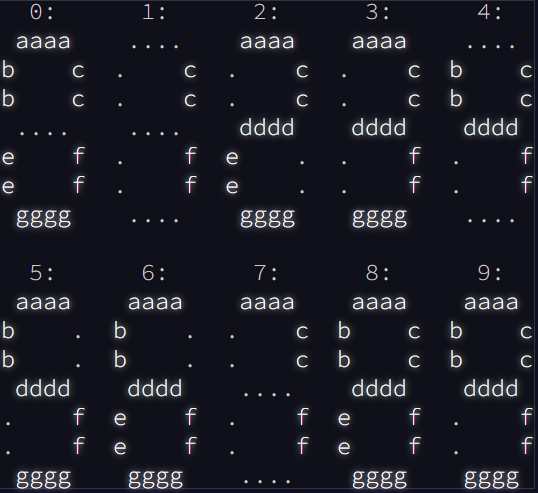

#Actual letter number combos
correct_codes <- 0:9
names(correct_codes) <- c("abcefg", "cf", "acdeg", "acdfg", "bcdf", "abdfg", "abdefg", "acf", "abcdefg", "abcdfg")The Data

Day 8 is really more a puzzle than a coding challenge. We’re given the inputs and outputs from a broken 7-segment display (like on a digital clock). We can imagine each segment of the clock as having a corresponding letter, from a (top) to g (bottom).

We can create a dictionary that will translate a string of letters into a corresponding number following the image above.
The only problem is that the data we are given doesn’t have the correct letters! Each row of the input data we are given includes all 10 possible numbers (0-9) but the letters used are wrong. We have to work out a number of rules to decode this information! See the full explanation for today’s challenge here.
#Load data
day8_data <- readr::read_delim(file = "./data/Day8.txt", delim = " | ",
col_names = c("inputs", "outputs"), show_col_types = FALSE)
head(day8_data)# A tibble: 6 × 2
inputs outputs
<chr> <chr>
1 fdceba bafdgc abeg afbdgec gbeacd abced bgc fcdge bg bedgc bafdec cgefd gcebd…
2 gbfac fegbda fcedagb bea ea abcdef dgbfe gfabe dgea gbdfec gdea bgefdc bea ef…
3 eg dagef gbcfeda ageb cegbfd gfe dbefa facdg abfged cedbaf befda daefb egf gc…
4 edgacfb gcfd dgb degfab bcega bdagc cgafbd fbacd gd fceabd fbdac gd gdbcaf dgb
5 eaf bedgaf dbafc bfceag fedcbg eafdcgb debfa ae adge gdebf abcdfeg febdg ae d…
6 afbdc aefg ea edbacfg dbefg eab gcbfde abecgd bgefad bfdae gfea bfdea gbdef f…Convert our data into nested lists so that it’s easier to work with.
day8_data <- day8_data %>%
mutate(inputs = stringr::str_split(inputs, pattern = " "),
outputs = stringr::str_split(outputs, pattern = " "))The Challenges
Challenge 1 & 2
In combination, the two challenges from Day 8 aim to decode the outputs so we’ll combine them together. The first rules we can use are simple. There are 4 numbers that can be easily identified just by the number of characters in the input.
- 2 characters = 1
- 3 characters = 7
- 4 characters = 4
- 7 characters = 8
So if we see an input ‘ab’ this must correspond to the number 1 or ‘cf’ when correctly translated to the 7-segment display. But we don’t know if ‘a’ is ‘c’ or ‘f’. We need some more rules to work this out. We’ll apply all these rules below:
numbers <- NULL
for (i in 1:nrow(day8_data)) {
#Split input into list with individual letters
split_input <- stringr::str_extract_all(day8_data$inputs[[i]], pattern = "[a-z]{1}")
split_output <- stringr::str_extract_all(day8_data$outputs[[i]], pattern = "[a-z]{1}")
#If there are two values, it must correspond to c and f
#Remove from the list afterwards
number1 <- split_input[unlist(lapply(split_input, \(letters) length(letters) == 2))][[1]]
split_input[unlist(lapply(split_input, \(letters) length(letters) == 2))] <- NULL
#If there are three values, it must correspond to a, c and f
#Remove from the list afterwards
number7 <- split_input[unlist(lapply(split_input, \(letters) length(letters) == 3))][[1]]
split_input[unlist(lapply(split_input, \(letters) length(letters) == 3))] <- NULL
#If there are four values, it must correspond to b, c, d and f
#Remove from the list afterwards
number4 <- split_input[unlist(lapply(split_input, \(letters) length(letters) == 4))][[1]]
split_input[unlist(lapply(split_input, \(letters) length(letters) == 4))] <- NULL
#If there are seven values, it must correspond to a-g
#Remove from the list afterwards
number8 <- split_input[unlist(lapply(split_input, \(letters) length(letters) == 7))][[1]]
split_input[unlist(lapply(split_input, \(letters) length(letters) == 7))] <- NULL
#Letter that's not shared between 1 and 7 must be a
a <- setdiff(number7, number1)
#Value of 6 characters that contains the letters in 4 must be 9.
#Remove from the list afterwards
number9 <- split_input[unlist(lapply(split_input, \(letters) length(letters) == 6 & all(number4 %in% letters)))][[1]]
split_input[unlist(lapply(split_input, \(letters) length(letters) == 6 & all(number4 %in% letters)))] <- NULL
#The missing letter in 9 is e
e <- setdiff(number8, number9)
#Remaining 6 letter character that includes the same letters as number1 must be 0.
#Remove from the list afterwards
number0 <- split_input[unlist(lapply(split_input, \(letters) length(letters) == 6 & all(number1 %in% letters)))][[1]]
split_input[unlist(lapply(split_input, \(letters) length(letters) == 6 & all(number1 %in% letters)))] <- NULL
#The missing value here is d
d <- setdiff(number8, number0)
#Last remaining length 6 is 6
number6 <- split_input[unlist(lapply(split_input, \(letters) length(letters) == 6))][[1]]
split_input[unlist(lapply(split_input, \(letters) length(letters) == 6))] <- NULL
#Missing value is c
c <- setdiff(number8, number6)
#The letter in 7 that wasn't just extracted is f
f <- setdiff(number1, c)
#Letter in 4 that hasn't yet been deciphered in b
b <- setdiff(number4, c(c, d, f))
#Remaining letter in 0 after removing all known ones is g
g <- setdiff(number0, c(a, b, c, e, f))
#Dictionary
dict <- letters[1:7]
names(dict) <- c(a, b, c, d, e, f, g)
#Now we can decode our output
output <- correct_codes[unlist(lapply(split_output, \(letters) paste(dict[letters][order(dict[letters])], collapse = "")))]
#Paste all the decoded numbers together
numbers <- append(numbers, as.integer(paste(output, collapse = "")))
}numbers [1] 6233 4675 5572 5197 8513 4356 307 8507 4088 3756 9295 2569 5165 3061 2862
[16] 1316 7879 2323 2593 5720 6695 7066 9013 9050 4501 2886 1326 734 9840 8003
[31] 1752 4944 2038 9216 9250 4237 2145 7182 1101 5063 2136 8496 8523 3326 4598
[46] 227 6537 3390 5065 9306 8460 6335 2664 6446 5550 4303 6955 3520 9376 2586
[61] 6520 2121 6685 3109 2838 8257 3082 7739 7132 2770 5996 521 3470 940 2060
[76] 6396 400 6050 2314 8464 262 9628 4719 706 8307 5355 4289 2422 2634 714
[91] 2016 2778 6695 474 6970 3689 3305 12 5074 8060 5359 9331 8993 3307 9329
[106] 458 9872 7089 6058 5030 3634 5702 3756 4506 2957 8995 5657 8375 415 2412
[121] 3021 7241 8368 9298 6666 8567 2648 9621 3215 5533 4972 2236 8329 2582 2929
[136] 2089 3436 3594 1383 5555 5461 2268 6377 1440 9494 8314 9483 3267 3037 5547
[151] 9184 4900 6696 7304 1294 1349 8642 6126 7367 5525 3861 3393 2958 5312 2028
[166] 5058 8513 4258 1780 3937 5568 6236 5159 518 8059 1014 1080 8538 40 6722
[181] 3193 2519 5877 2460 3348 7329 8622 4380 3629 771 3734 6563 1900 4502 1472
[196] 6293 7392 8285 9928 7535The answer of our final challenge is the sum of all these values.
sum(numbers)[1] 982158See previous solutions here: